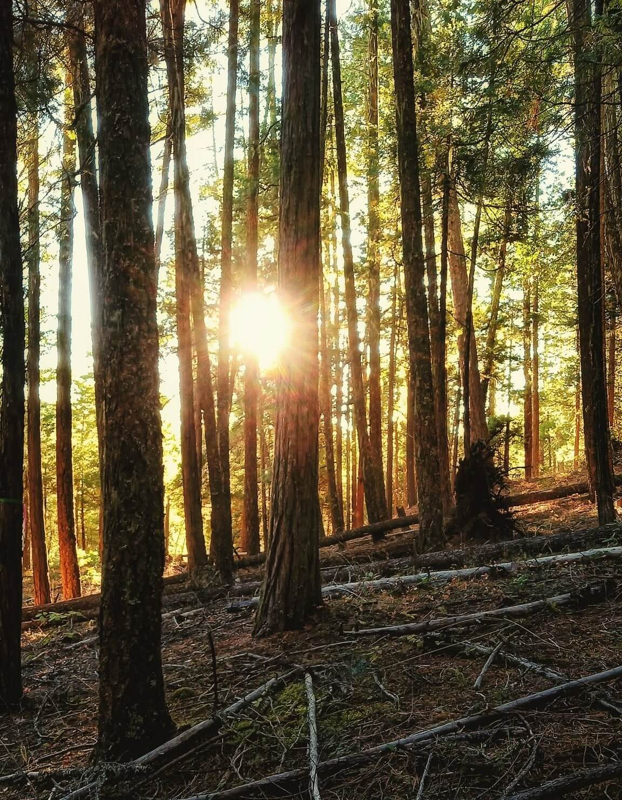
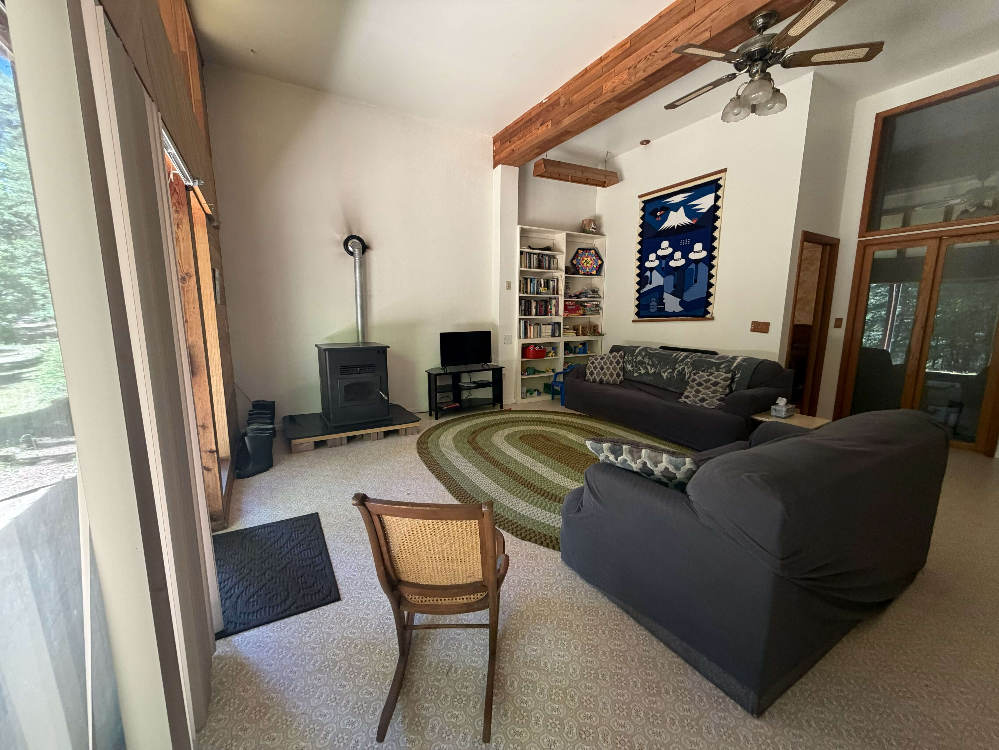
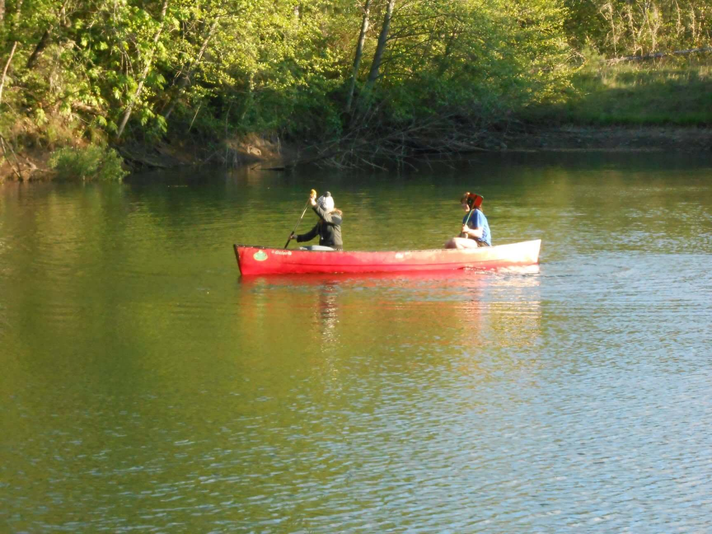
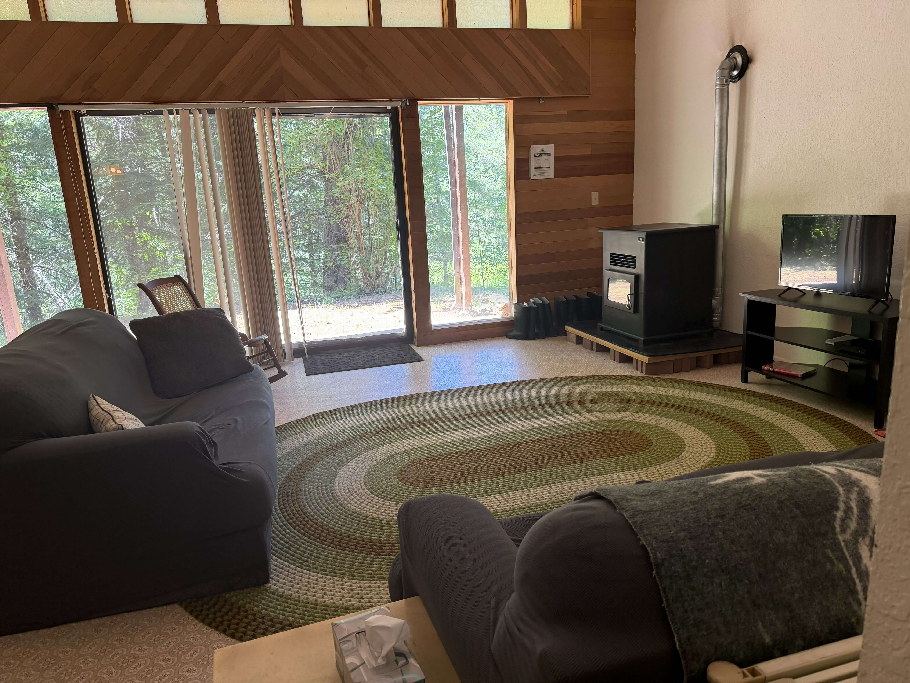
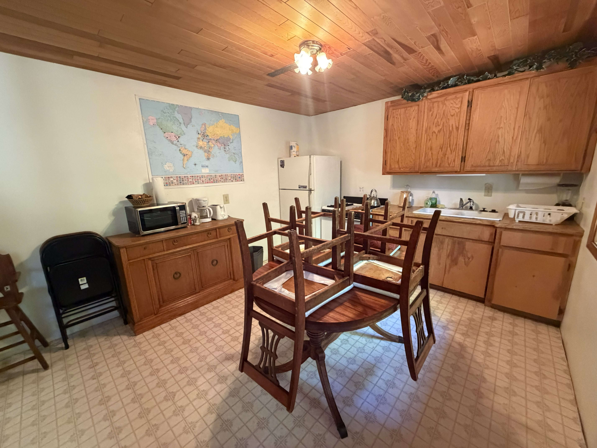
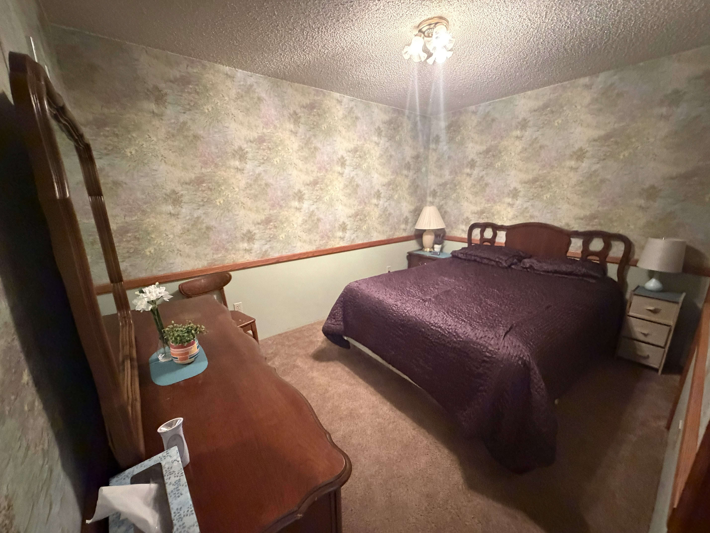
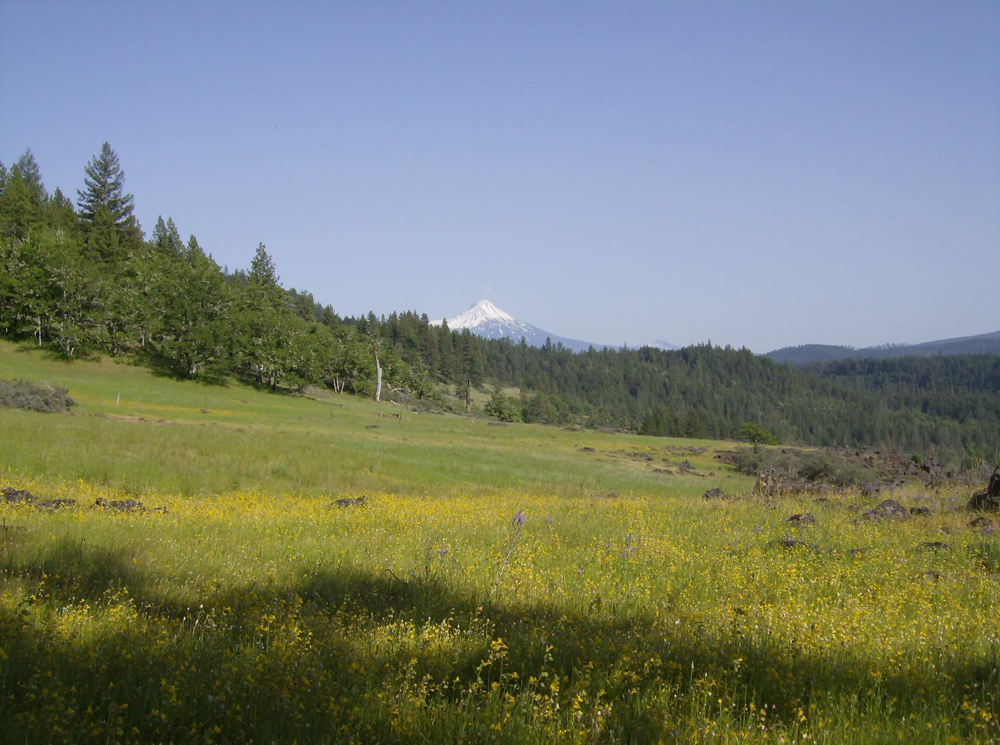
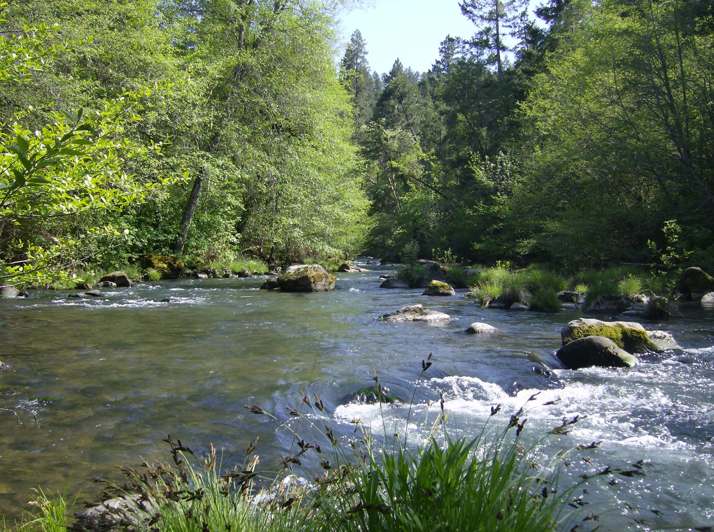
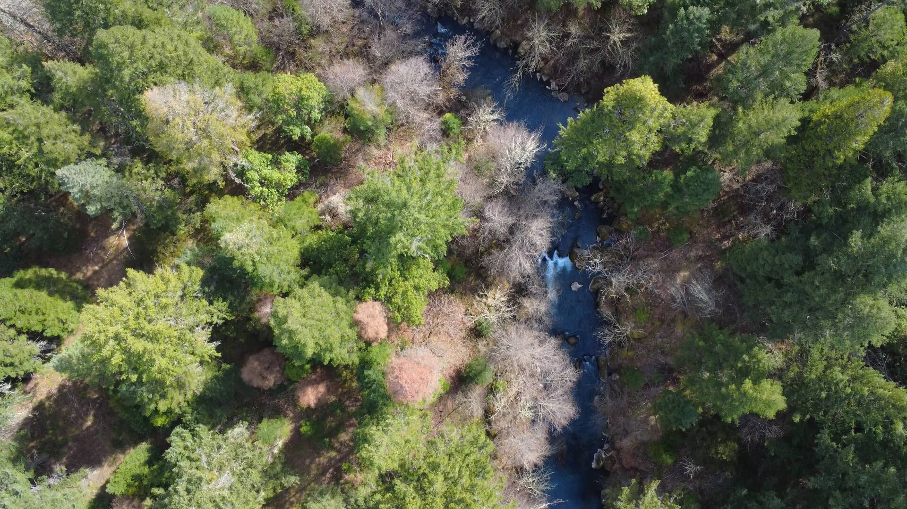
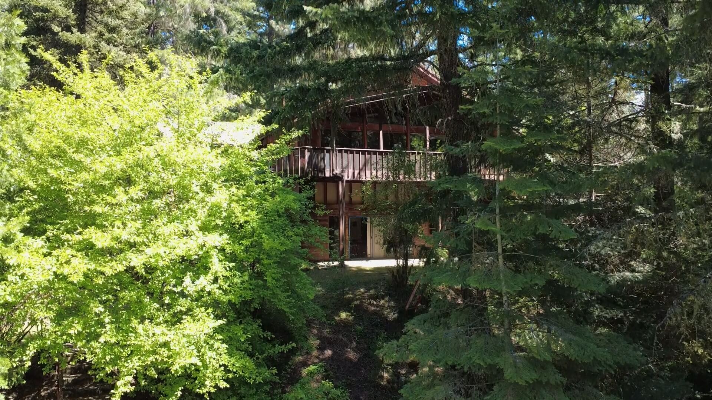

Dedicated care, renewal, and biblical counsel for those who have given everything on the mission field. You are seen. You are not forgotten.
50+Years in Missions
25+Years Helping Missionaries
114Acres of Peaceful Property
501c3Tax-Exempt Nonprofit
"The Lord is my shepherd… He restoreth my soul."
Psalm 23:1–3

Our Mission
Caring for Those Who Serve the World
Thousands of missionaries have dedicated their lives to proclaiming the Gospel. Yet each year, approximately 20% leave the field — wounded, discouraged, and without adequate support. He Restoreth Ministries exists to fill that gap.
God has provided a beautiful 114-acre property in the foothills of southern Oregon, and He has equipped Brent and Ruth Ullom — who themselves served as missionaries in Ecuador and grew up on the mission field — to minister to hurting servants of God with compassion, wisdom, and the love of Christ.
What We Offer
Three Ways We Serve
The Retreat Center
One of the Most Beautiful Spots on Earth
Nestled in the foothills of southern Oregon, our 114-acre property offers unparalleled peace and natural beauty. Leave behind the pressures of ministry and allow God to restore your soul.
114.5 Acres of Natural Beauty
Old-growth forest, open meadows, a tranquil pond, and two meandering creeks.
Private Two-Bedroom Apartment
A fully private, comfortable space for you and your family — your home away from home.
Near Crater Lake & Rogue River
Close to world-class natural attractions for sightseeing and family adventures.


Testimonials
What Missionaries Are Saying
"He Restoreth Ministries was a much-needed resource for our family during a very low time in our ministry and personal lives. The beautiful location and Christian counsel and fellowship were a deep blessing."
— Missionary Family
"We came knowing that the Lord is our Comforter and Healer. Through Godly counsel, times of solitude, nature, and community with the Ulloms, we returned refreshed and ready to move forward."
— Missionary Family
"Thank you for these days of rest, rejuvenation, and reflection in such quiet, lovely surroundings. We have been blessed and encouraged beyond what we could have imagined."
— Visiting Missionary
Prepare
Equipping missionary families for the crises and stresses they will face — through teaching, counseling, seminars, and pre-field retreats.
Protect
Walking alongside families in crisis — serving as counselor, consultant, and advocate with their sending church or mission organization.
Provide
Offering a beautiful, fully private place of retreat and restoration for missionary families and individuals at little to no cost.
Be the Good Samaritan
In Luke 10, Jesus commended the one who paid the cost to reach out to the hurting. He Restoreth Ministries is a 501(c)3 nonprofit that depends on the generosity of supporters like you. Your gift directly enables wounded missionaries to find rest, healing, and renewed purpose.
Contact Us
We're Here. Reach Out.
Whether you are a missionary in need, a church seeking to care for your missionaries, or a supporter who wants to learn more — we would be glad to hear from you.
Mailing AddressHe Restoreth Ministries, Inc. PO Box 47, Butte Falls, OR 97522
Subscribe to receive updates, encouraging stories, and news from He Restoreth Ministries.
Our Retreat Center
A Sanctuary for Weary Souls
The Property
114 Acres of God's Creation
Our retreat property is nestled in the foothills of southern Oregon, situated on 114 beautiful acres with a peaceful creek running through the land and a large pond. It is one of the most serene and restorative settings imaginable for missionary rest and renewal.
Our private two-bedroom apartment offers a fully self-contained space for missionary families or individuals. Come for a few days or stay for a week — the pace here is entirely your own. Counseling is available but never required.
New missionaries are especially welcome — contact us about a pre-field retreat. We also have a special heart for those who have experienced crisis and need a place to process, grieve, and begin to heal.
What Does It Cost?
Guests provide only their own food. The nearest large store is approximately 30 minutes away.
A nominal heating cost applies during cooler months to cover pellet fuel.
Everything else — the apartment, the property, the counseling — is provided entirely free of charge.



Activities & Amenities
What the Property Offers
The retreat is designed for rest, not a packed agenda. That said, the property and surrounding region offer a wealth of opportunities for recreation, reflection, and family enjoyment.
Hiking trails through old-growth forest
Prayer walks in a serene natural setting
Wild and domestic animals on the property
Wading and swimming in the creek
Canoeing and fishing on the peaceful pond
Picnic areas throughout the property
Quiet walking paths for solitude and reflection
Biblical counseling — available, never required
Near Crater Lake National Park (1.5 hrs)
Near Rogue River white-water rafting (45 min)




Explore the Region
Nearby Attractions
Southern Oregon is home to some of the most spectacular natural and family-friendly destinations in the Pacific Northwest.
Crater Lake National Park
One of the most breathtaking natural sites in the US — a deep, crystal-blue volcanic lake of extraordinary beauty. Absolutely unmissable.
Approx. 1.5-hour drive
Rogue River
Exceptional white-water rafting through stunning Oregon wilderness. Several outfitters offer guided trips for all experience levels.
Approx. 45-minute drive
Rogue-Siskiyou National Forest
Explore a natural bridge, ancient redwood groves, cascading waterfalls, and miles of scenic trails.
Approx. 45-minute drive
Oregon Caves National Monument
An unforgettable guided tour through ancient marble caves — a geological wonder perfect for the whole family.
Approx. 1.75-hour drive
ScienceWorks Hands-On Museum
An engaging, interactive museum where children and adults explore science through hands-on exhibits.
Approx. 1.5-hour drive
Mt. Ashland Ski Area
During winter months, enjoy excellent skiing and snowboarding in the Siskiyou Mountains.
Approx. 1.75-hour drive
Getting Here
Directions to the Retreat Center
2244 Cobleigh Road · Butte Falls, OR 97522
Take the southernmost Gold Hill exit (Exit 40) off Interstate 5. Turn left across the highway, then left again toward Gold Hill. Take the first right, cross the railroad tracks, and follow the road to the right. Continue on Highway 234 for approximately 17.5 miles until it ends at Highway 62. Turn left onto Highway 62 and drive ¾ of a mile until you reach Butte Falls Highway on your right. Follow Butte Falls Highway for 12.5 miles, then turn left onto Cobleigh Road. Continue for 2 miles until you cross a steel bridge. Almost immediately on the right you will see several driveways — the second driveway is ours. Take the driveway to the left and follow it for approximately ¾ of a mile. The house will be on your right.
Please call ahead before your arrival so we can provide specific guidance and prepare a warm welcome. 1 (541) 865-7907
Are you feeling that something is wrong in your ministry or personal life? Are you unsure who to turn to? He Restoreth Ministries offers experienced, compassionate, biblically grounded counsel for missionaries and those in full-time ministry.
We have been involved in missions for over 50 years, and have been walking alongside hurting missionaries for more than 25. We understand the field — because we have been on it.
Available via email, chat, Zoom video sessions, or in person at the retreat center.
Master's Degree in Clinical Psychology · Wheaton College
Meet Our Counselor
Brent Ullom, M.A. Clinical Psychology
Brent holds a Master's degree in Clinical Psychology from Wheaton College, specializing in marriage and family, cross-cultural, and crisis counseling. He is a Missionary Kid who grew up in Haiti, and later served with his family as a missionary in Ecuador for six years.
This firsthand experience — including personal tragedies such as the loss of a newborn child — gives Brent a depth of empathy that is rare among counselors. He does not speak from theory alone, but from a life genuinely lived on the field.
"My approach to counseling is grounded in a rock-solid faith in God's Word and dependence on the Holy Spirit to guide each conversation."
— Brent Ullom
Areas of Focus
How We Can Help
Brent brings experience across a wide range of pastoral and clinical areas, with particular expertise in the pressures faced by cross-cultural workers and their families.
Marriage — enrichment, relational tension, infidelity, cross-cultural adjustment
Parenting — cultural re-entry, teen issues, classroom challenges, MK concerns
Missionary team conflicts and leadership tensions
Furlough transitions and home assignment stress
Trauma, crisis response, and grief processing
Depression, anxiety, and emotional exhaustion
Health-related and medical stress
Pre-field preparation and new missionary readiness
Cross-cultural and re-entry identity challenges
General encouragement and experienced biblical counsel
For Missionaries Only
Need Support Today?
If you are a missionary or in full-time ministry and you are navigating a difficult situation, please reach out. You do not need to face this alone.
1
Write to Us
Send an email of 300 words or less to office@herestoreth.com or use the form on the right.
2
We Respond Within 48 Hours
We will read your message prayerfully and respond with wisdom helpful to your specific situation.
3
Biblical & Prayerful Guidance
Our commitment is to respond promptly and in accordance with God's Word — with genuine care for you.
4
Continue the Conversation
Many find ongoing correspondence, Zoom sessions, or an in-person retreat deeply helpful.
Send Us a Message
About He Restoreth Ministries
Called to Care for the Called
Our Story
Why HRM Exists
Thousands of missionaries have sacrificed greatly to carry the Gospel to the nations. Yet on the front lines, these spiritual soldiers face extraordinary levels of trauma, stress, and conflict — and many return home wounded, discouraged, and broken. Each year, approximately 20% leave the mission field entirely.
Tragically, for many of these servants, there are few places of genuine healing and rest. He Restoreth Ministries was founded to fill that gap. God has provided a beautiful property in southern Oregon, and He has equipped Brent and Ruth Ullom — who have walked the same road — to minister to hurting missionaries with wisdom and compassion.
In Luke 10, Jesus commended the Good Samaritan — the one who took the time and bore the cost to care for a wounded stranger. He Restoreth Ministries invites you to be that kind of Good Samaritan to missionaries who have given everything.
He Restoreth Ministries, Inc. is a recognized 501(c)3 tax-exempt nonprofit organization. All donations are tax-deductible to the extent permitted by law.
Our Team
Meet the Ulloms
He Restoreth Ministries is led by a missionary family who understands firsthand the joys and hardships of life on the field. The Ulloms served in Ecuador for six years, and both Brent and Ruth grew up as Missionary Kids — Brent in Haiti, Ruth in Peru.
Brent Ullom
Founder & Counselor · MK from Haiti
Brent holds a Master's degree in Clinical Psychology from Wheaton College, specializing in marriage and family, cross-cultural, and crisis counseling. He served as a missionary in Ecuador for six years and brings over 25 years of experience caring for missionaries.
Ruth Ullom
Co-Founder & Hospitality Director · MK from Peru
Ruth holds a degree in education and is gifted in hospitality and creating an environment of warmth and welcome. She brings a genuine love for people and a servant's heart to every guest who stays at the retreat.
Brent and Ruth have four adult children: Timothy (married to Ashley, with daughter Amelia), Hannah, Rebekah, and Elisabeth. Their family story is one of faith, sacrifice, and God's faithfulness — and it is out of that story that this ministry was born.
Our Beliefs
Doctrinal Statement
He Restoreth Ministries is anchored in historic, evangelical Christian faith.
God
We believe in one God, Creator of all things, holy, infinitely perfect, and eternally existing in a loving unity of three equally divine Persons: the Father, the Son, and the Holy Spirit. Having limitless knowledge and sovereign power, God has graciously purposed from eternity to redeem a people for Himself and to make all things new for His own glory.
The Bible
We believe that God has spoken in the Scriptures, both Old and New Testaments, through the words of human authors. As the verbally inspired Word of God, the Bible is without error in the original writings, the complete revelation of His will for salvation, and the ultimate authority by which every realm of human knowledge and endeavor should be judged.
The Human Condition
We believe that God created Adam and Eve in His image, but they sinned when tempted by Satan. In union with Adam, human beings are sinners by nature and by choice, alienated from God and under His wrath. Only through God's saving work in Jesus Christ can we be rescued, reconciled, and renewed.
Jesus Christ
We believe that Jesus Christ is God incarnate, fully God and fully man, one Person in two natures. Jesus — Israel's promised Messiah — was conceived through the Holy Spirit and born of the virgin Mary. He lived a sinless life, was crucified, rose bodily from the dead, ascended into heaven, and sits at the right hand of God as our High Priest and Advocate.
The Work of Christ
We believe that Jesus Christ, as our representative and substitute, shed His blood on the cross as the perfect, all-sufficient sacrifice for our sins. His atoning death and victorious resurrection constitute the only ground for salvation.
The Holy Spirit
We believe that the Holy Spirit, in all that He does, glorifies the Lord Jesus Christ. He convicts the world of its guilt, regenerates sinners, and in Him believers are baptized into union with Christ. He also indwells, illuminates, guides, equips, and empowers believers for Christ-like living and service.
The Church
We believe that the true church comprises all who have been justified by God's grace through faith alone in Christ alone. They are united by the Holy Spirit in the body of Christ, of which He is the Head. The Lord Jesus mandated two ordinances — baptism and the Lord's Supper — which visibly and tangibly express the Gospel.
Eternal Destiny
We believe that God commands everyone everywhere to believe the Gospel by turning to Him in repentance and receiving the Lord Jesus Christ. God will raise the dead bodily and judge the world, assigning the unbeliever to eternal condemnation and the believer to eternal blessedness with the Lord in the new heaven and new earth, to the praise of His glorious grace.
He Restoreth Ministries, Inc. is a recognized 501(c)3 tax-exempt organization. All financial gifts are tax-deductible to the extent permitted by law. Contact us at office@herestoreth.com or call 1 (541) 865-7907.
Testimonials
What Missionaries Are Saying
You were a life jacket for us in the stormy sea. Each time I wrote to you, you were able to lead us further in our journey. Then we were blessed to come to Oregon and spend a week with your precious family. Our children hit it off immediately and had such joy exploring the gorgeous property. What a place to be refreshed and ministered to. Our hearts are knit to yours and we hope God will allow us to return for an even longer stay next time.— Missionary Family Serving in Poland
More Voices from the Field
Stories of Restoration
When we first contacted He Restoreth Ministries from Poland, Brent ministered to us during an incredibly difficult crisis. His counsel and prayer helped us rise above our circumstances and see our situation from God's perspective. He was truly a life jacket in a stormy sea — each email brought us further along in our journey toward healing and clarity.
Then we were blessed to actually come to Oregon and spend a week with Brent, Ruth, and their precious family. The children connected immediately and had so much joy exploring the gorgeous property. Thank you for allowing God to use your gifts and wisdom to walk us through the hardest season of our lives and ministry. We still feel your love and care deeply today.
— Missionary Family, Poland
He Restoreth Ministries was a much-needed resource for our family during a very low point in our ministry and personal lives. The beautiful location, the Christian counsel, and the genuine fellowship were a blessing we did not expect to find in such measure. We arrived weary and left genuinely renewed.
— Missionary Family
We came to He Restoreth Ministries knowing that the Lord is our Comforter and Healer. Through Godly counsel, times of solitude, time spent in nature, and genuine community with the Ulloms, we returned to our field of service refreshed and ready to move forward with renewed confidence in God's call.
— Missionary Family
Thank you for these days of rest, rejuvenation, and reflection in such quiet, lovely surroundings. We have been blessed and encouraged beyond measure. The solitude, the restful reflection, the canoes and the lake, the paths for walking, and the time in meaningful conversation with Brent — all of it was precisely what our family needed.
— Visiting Missionary Family
Are You a Missionary in Need of Rest?
We would be honored to welcome you. Please reach out to learn more about scheduling a stay or beginning a counseling conversation with Brent.
Partner With Us
Help Us Help Missionaries
The Need
Your Gift Changes Lives
He Restoreth Ministries operates entirely on the generosity of donors who believe that missionaries deserve care — not just deployment. Every dollar given enables us to provide the retreat apartment, maintain the property, support counseling services, and keep this ministry available to missionaries at no cost to them.
In Luke 10, Jesus told the story of the Good Samaritan — a person who saw someone hurting, stopped, and paid the cost to bring healing. Will you be that person for a wounded missionary today?
He Restoreth Ministries is a recognized 501(c)3 nonprofit. All gifts are tax-deductible. Make checks payable to He Restoreth Ministries, Inc. and mail to PO Box 47, Butte Falls, OR 97522.
Make checks payable to He Restoreth Ministries, Inc. and mail to PO Box 47, Butte Falls, OR 97522. All gifts are tax-deductible.
Pray for the Ministry
Your prayers are the most essential support we receive. Please pray for the missionaries we serve, for God's provision, and for continued fruit from this ministry.
Spread the Word
Know a missionary, sending church, or mission organization that should know about He Restoreth? Please tell them — word of mouth is vital to reaching those in need.
Ready to Partner With Us?
For questions about giving or to discuss other ways to support this ministry, please don't hesitate to reach out.